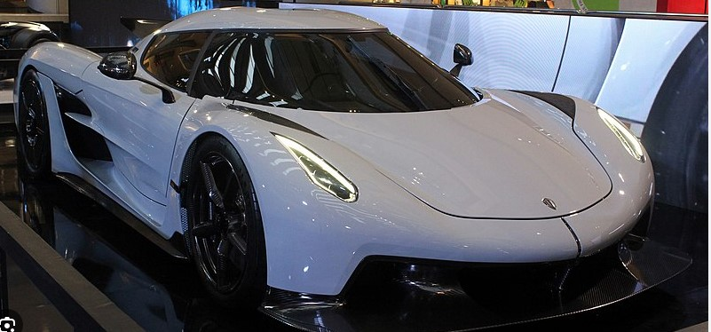
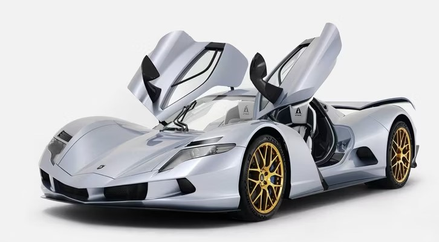
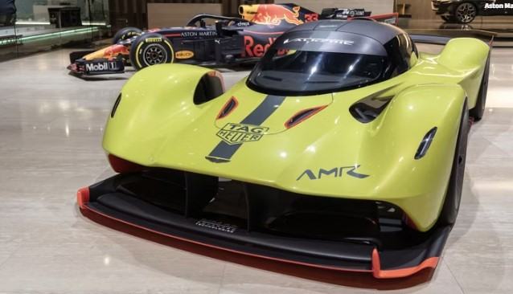

 If you believe in unverified records, the Koenigsegg Jesko Absolut is the fastest car in the world with a top speed of 330 mph. This is a theoretical top speed and hasn't been tested yet. However, in terms of verifiable records, the Bugatti Chiron Super Sport 300+ holds the current record with a verified top speed of 304 mph
The first production car with a recorded speed was the 1894 Benz Velo that had a top speed of just 12 mph. Few verified records exist from that point until around 1950, when the Jaguar XK120 set a production car speed record of 124.6 mph (not to be confused with the tuned prototype that managed to hit 133 mph) From this point on, it became a trend for automotive publications to do their own top speed test. Even the venerable McLaren F1 was tested by Car and Driver, and in 2005 we got our first government-official speed record set by the Bugatti Veyron EB 16.4 and verified by German inspection officials in 2005. It was that moment when the official challenge between manufacturers kicked off, and since then there have only been a handful of cars up to breaking the record. This list covers the top 12 fastest cars in the world, ranked from slowest to fastest. Updated March 2023: The automotive world is changing constantly, and every day there are more and more cars, some of which are built to break records. For example, just at the end of 2022, the Rimac Nevera became the fastest EV in the world, after it hit a top speed of 258 mph. This result also put it on the same list with the fastest supercars in the world, but it's not the only car that belongs on this list, and we've spilled the beans below with the 3 fastest cars in the world!
 1. Saleen S7 Twin-Turbo - 248 mph. The Saleen S7 is not only an old, very rare beauty, but also a very powerful and fast supercar. First announced back in 2000, the S7 was joined by the S7 Twin Turbo just a few years later. The model is powered by the same 7.0-liter V-8 engine upgraded with Garrett twin-turbochargers. As a result, the output is now 750 horsepower and 700 pound-feet of torque. The S7 Twin Turbo can sprint from 0 to 60 mph in just 2.7 seconds, from 0 to 100 mph in 5.9 seconds, and runs the quarter mile in 10.5 seconds. Top speed is 248 mph. Fun fact: if the car looks familiar, you may have spotted it along side Jim Carrey in Bruce Almighty.
1. Saleen S7 Twin-Turbo - 248 mph. The Saleen S7 is not only an old, very rare beauty, but also a very powerful and fast supercar. First announced back in 2000, the S7 was joined by the S7 Twin Turbo just a few years later. The model is powered by the same 7.0-liter V-8 engine upgraded with Garrett twin-turbochargers. As a result, the output is now 750 horsepower and 700 pound-feet of torque. The S7 Twin Turbo can sprint from 0 to 60 mph in just 2.7 seconds, from 0 to 100 mph in 5.9 seconds, and runs the quarter mile in 10.5 seconds. Top speed is 248 mph. Fun fact: if the car looks familiar, you may have spotted it along side Jim Carrey in Bruce Almighty.
 2. Aspark Owl - 249 mph. Limited to only 50 units, the Aspark Owl brings a lot of interesting features to the market. It is first Japanese full-electric hypercar ever and also the most powerful EV in the world: its four permanent magnet synchronous motors can produce a combined 2,012 horsepower. Built on a carbon fiber chassis that weighs only 264.5 pounds, the Owl is incredibly light, shockingly durable, and very fast. It can sprint from 0 to 60 mph in 1.69 seconds and can hit a claimed top speed of 249 mph. All these amazing numbers happen, while also providing an all-electric range of 280 miles. The Aspark Owl is priced is approximately $2.8 million dollars - which doesn't exactly make it a bargain.
 3. Aston Martin Valkyrie AMR Pro - 250 mph. The Valkyrie AMR Pro is a track-only variant of the Aston Martin Valkyrie, and it was unveiled at the 2018 Geneva Motor Show. The Pro model is powered by the same 6.5-liter naturally aspirated V-12 engine found in the Valkyrie Road car, but it doesn't have the KERS system. Still, the V-12 is equally impressive and delivers a total of 1,000 horsepower. While this may not be as much as the standard Valkyrie, some weight-saving measures like ultra-lightweight carbon-fiber bodywork, carbon suspension springs, and Perspex windshield and side windows have made the Valkyrie Pro very fast: it can hit a top speed of 250 mph. The Valkyrie AMR Pro is limited to only 25 units, and all of them are already spoken for.